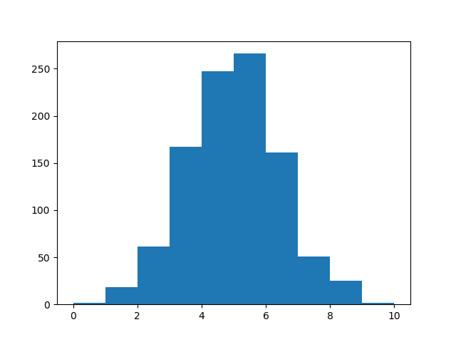
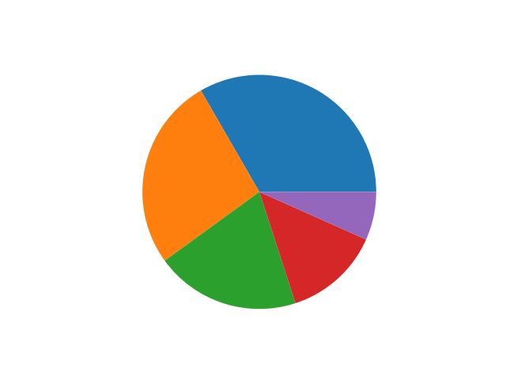
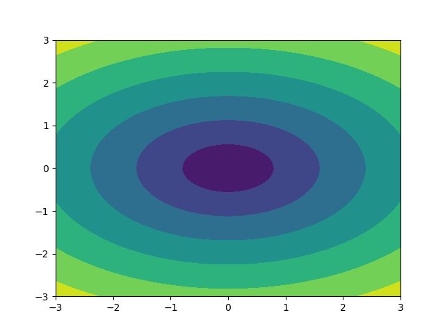
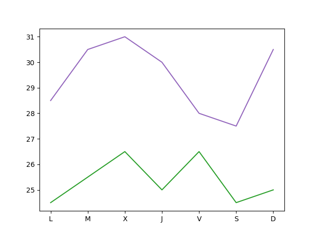
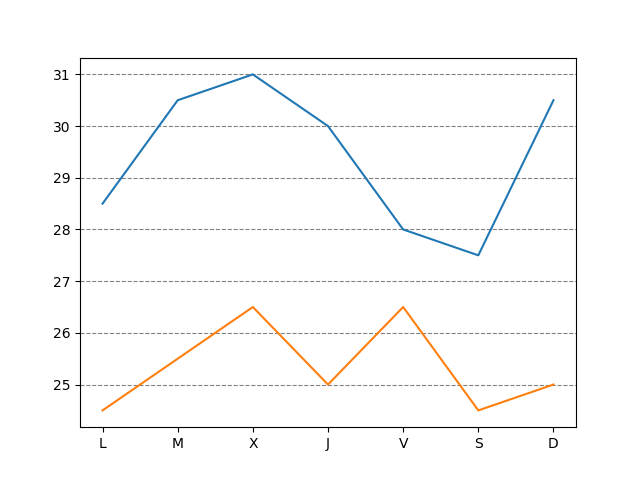

La librería Matplotlib
Matplotlib es una librería de Python especializada en la creación de gráficos en dos dimensiones.
Permite crear y personalizar los tipos de gráficos más comunes, entre ellos:
- Diagramas de barras
- Histograma
- Diagramas de sectores
- Diagramas de caja y bigotes
- Diagramas de violín
- Diagramas de dispersión o puntos
- Diagramas de lineas
- Diagramas de areas
- Diagramas de contorno
- Mapas de color
y combinaciones de todos ellos.
En la siguiente galería de gráficos pueden apreciarse todos los tipos de gráficos que pueden crearse con esta librería.
Creación de gráficos con matplotlib
Para crear un gráfico con matplotlib es habitual seguir los siguientes pasos:
-
Importar el módulo
pyplot. -
Definir la figura que contendrá el gráfico, que es la region (ventana o página) donde se dibujará y los ejes sobre los que se dibujarán los datos. Para ello se utiliza la función
subplots(). -
Dibujar los datos sobre los ejes. Para ello se utilizan distintas funciones dependiendo del tipo de gráfico que se quiera.
-
Personalizar el gráfico. Para ello existen multitud de funciones que permiten añadir un título, una leyenda, una rejilla, cambiar colores o personalizar los ejes.
-
Guardar el gráfico. Para ello se utiliza la función
savefig(). -
Mostrar el gráfico. Para ello se utiliza la función
show().
# (1)!
# Importar el módulo pyplot con el alias plt
import matplotlib.pyplot as plt
# Crear la figura y los ejes
fig, ax = plt.subplots()
# Dibujar puntos
ax.scatter(x = [1, 2, 3], y = [3, 2, 1])
# Guardar el gráfico en formato png
plt.savefig('diagrama-dispersion.png')
# Mostrar el gráfico
plt.show()
- Debes instalar la libreria de matplotlib en tu intérprete con el siguiente comando
pip install matplotlib.

Diagramas de dispersión o puntos
scatter(x, y): Dibuja un diagrama de puntos con las coordenadas de la listaxen el eje X y las coordenadas de la listayen el eje Y.

Diagramas de líneas
plot(x, y): Dibuja un polígono con los vértices dados por las coordenadas de la listaxen el eje X y las coordenadas de la listayen el eje Y.

Diagramas de areas
fill_between(x, y): Dibuja el area bajo el polígono con los vértices dados por las coordenadas de la listaxen el eje X y las coordenadas de la listayen el eje Y.

Diagramas de barras verticales
bar(x, y): Dibuja un diagrama de barras verticales dondexes una lista con la posición de las barras en el eje X, eyes una lista con la altura de las barras en el eje Y.

Diagramas de barras horizontales
barh(x, y): Dibuja un diagrama de barras horizontales dondexes una lista con la posición de las barras en el eje Y, eyes una lista con la longitud de las barras en el eje X.

Histogramas
hist(x, bins): Dibuja un histograma con las frecuencias resultantes de agrupar los datos de la listaxen las clases definidas por la listabins.

Diagramas de sectores

Diagramas de caja y bigotes

Diagramas de violín

Diagramas de contorno
contourf(x, y, z): Dibuja un diagrama de contorno con las curvas de nivel de la superficie dada por los puntos con las coordenadas de las listasx,yyzen los ejes X, Y y Z respectivamente.

Mapas de color

hist2d(x, y): Dibuja un mapa de color que simula un histograma bidimensional, donde los colores de los cuadrados dependen de las frecuencias de las clases de la muestra dada por las listasxey.

Cambiar el aspecto de los gráficos
Los gráficos creados con Matplotlib son personalizables y puede cambiarse el aspecto de casi todos sus elementos. Los elementos que suelen modificarse más a menudo son:
- Colores
- Marcadores de puntos
- Estilo de líneas
- Títulos
- Ejes
- Leyenda
- Rejilla
Colores
Para cambiar el color de los objetos se utiliza el parámetro color = nombre-color, donde nombre-color es una cadena con el nombre del color de entre los colores disponibles.

Marcadores
Para cambiar la forma de los puntos marcadores se utiliza el parámetro marker = nombre-marcador donde nombre-marcador es una cadena con el nombre del marcador de entre los marcadores disponibles
Líneas
Para cambiar el estilo de las líneas se utiliza el parámetro linestyle = nombre-estilo donde nombre-estilo es una cadena con el nombre del estilo de entre los estilos disponibles

Títulos
Para añadir un título principal al gráfico se utiliza el siguiente método:
ax.set_title(titulo, loc=alineacion, fontdict=fuente): Añade un título con el contenido de la cadenatituloa los ejesax. El parámetrolocindica la alineación del título, que puede ser'left'(izquierda),'center'(centro) o'right'(derecha), y el parámetrofontdictindica mediante un diccionario las características de la fuente (la el tamañofontisize, el grosorfontweighto el colorcolor).

Ejes
Para cambiar el aspecto de los ejes se suelen utilizar los siguientes métodos:
ax.set_xlabel(titulo): Añade un título con el contenido de la cadenatituloal eje x deax. Se puede personalizar la alineación y la fuente con los mismos parámetros que para el título principal.ax.set_ylabel(titulo): Añade un título con el contenido de la cadenatituloal eje y deax. Se puede personalizar la alineación y la fuente con los mismos parámetros que para el título principal.ax.set_xlim([limite-inferior, limite-superior]): Establece los límites que se muestran en el eje x deax.ax.set_ylim([limite-inferior, limite-superior]): Establece los límites que se muestran en el eje y deax.ax.set_xticks(marcas): Dibuja marcas en el eje x deaxen las posiciones indicadas en la listamarcas.ax.set_yticks(marcas): Dibuja marcas en el eje y deaxen las posiciones indicadas en la listamarcas.ax.set_xscale(escala): Establece la escala del eje x deax, donde el parámetroescalapuede ser'linear'(lineal) o'log'(logarítmica).ax.set_yscale(escala): Establece la escala del eje y deax, donde el parámetroescalapuede ser'linear'(lineal) o'log'(logarítmica).

Leyenda
Para añadir una leyenda a un gráfico se utiliza el siguiente método:
ax.legend(leyendas, loc = posición): Dibuja un leyenda en los ejesaxcon los nombres indicados en la listaleyendas. El parámetrolocindica la posición en la que se dibuja la leyenda y puede ser'upper left'(arriba izquierda),'upper center'(arriba centro),'upper right'(arriba derecha),'center left'(centro izquierda),'center'(centro),'center right'(centro derecha),'lower left'(abajo izquierda),'lower center'(abajo centro),'lower right'(abajo derecha). Se puede omitir la listaleyendassi se indica la leyenda de cada serie en la función que la dibuja mediante el parámetrolabel.

Rejilla
ax.grid(axis=ejes, color=color, linestyle=estilo) : Dibuja una rejilla en los ejes de ax. El parámetro axis indica los ejes sobre los que se dibuja la regilla y puede ser 'x' (eje x), 'y' (eje y) o 'both' (ambos). Los parámetros color y linestyle establecen el color y el estilo de las líneas de la rejilla, y pueden tomar los mismos valores vistos en los apartados de colores y líneas.

Múltiples gráficos
Es posible dibujar varios gráficos en distintos ejes en una misma figura organizados en forma de tabla. Para ello, cuando se inicializa la figura y los ejes, hay que pasarle a la función subplots el número de filas y columnas de la tabla que contendrá los gráficos. Con esto los distintos ejes se organizan en un array y se puede acceder a cada uno de ellos a través de sus índices. Si se quiere que los distintos ejes compartan los mismos límites para los ejes se pueden pasar los parámetros sharex = True para el eje x o sharey = True para el eje y.

Integración con Pandas
Matplotlib se integra a la perfección con la librería Pandas, permitiendo dibujar gráficos a partir de los datos de las series y DataFrames de Pandas.
df.plot(kind=tipo, x=columnax, y=columnay, ax=ejes): Dibuja un diagrama del tipo indicado por el parámetrokinden los ejes indicados en el parámetroax, representando en el eje x la columna del parámetroxy en el eje y la columna del parámetroy. El parámetrokindpuede tomar como argumentos'line'(lineas),'scatter'(puntos),'bar'(barras verticales),'barh'(barras horizontales),'hist'(histograma),'box'(cajas),'density'(densidad),'area'(area) o'pie'(sectores). Es posible pasar otros parámetros para indicar el color, el marcador o el estilo de línea como se vió en los apartados anteriores.

Si no se indican los parámetros x e y se representa el índice de las filas en el eje x y una serie por cada columna del Dataframe. Las columnas no numéricas se ignoran.